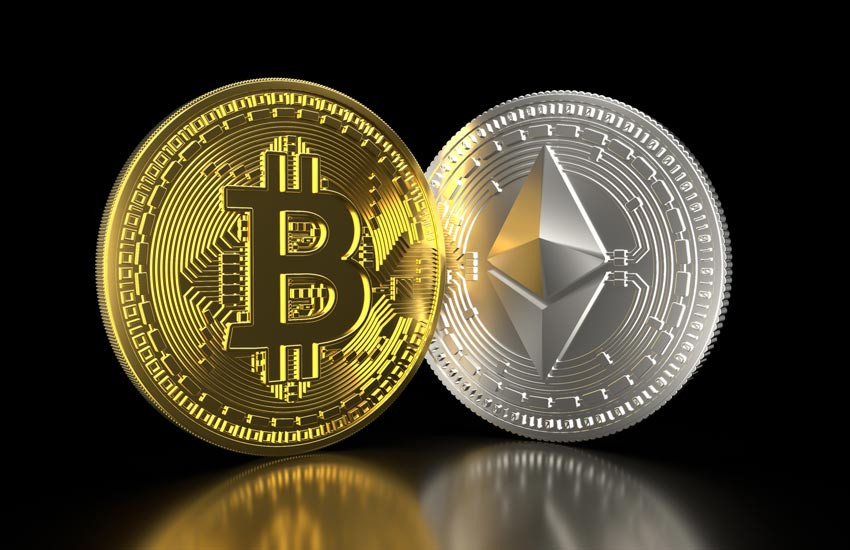
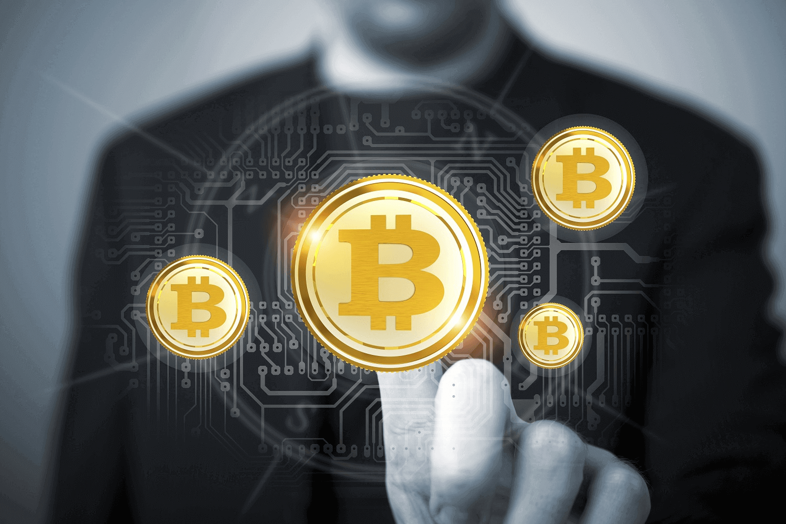

What Is Cryptocurrency? - dummies
 Toggle navigation Browse Topics
Live
Consumer Electronics Food & Drink Games Health Personal Finance Home & Garden Pets Relationships Sports ReligionLearn
Art Center Crafts Education Languages Photography Test PrepWork
Social Media Software Programming Web Design & Development Business Careers Computers Custom SolutionsRelated articles:
What Is Cryptocurrency?
Short-Term Analysis Methods for Cryptocurrency Investing
What is a Blockchain, and How Does It Work?
How Mining Cryptocurrency Works
3 Short-Term Cryptocurrency Investing Time Frames
Load more Personal Finance What Is Cryptocurrency?What Is Cryptocurrency?
By Kiana Danial
Part of Blockchain For Dummies Cheat Sheet
Simply stated, a cryptocurrency is a new form of digital money. You can transfer your traditional, non-cryptocurrency money like the U.S. dollar digitally, but that’s not quite the same as how cryptocurrencies work. When cryptocurrencies become mainstream, you may be able to use them to pay for stuff electronically, just like you do with traditional currencies.
However, what sets cryptocurrencies apart is the technology behind them. You may say, “Who cares about the technology behind my money? I only care about how much of it there is in my wallet!” The issue is that the world’s current money systems have a bunch of problems. Here are some examples:
Payment systems such as credit cards and wire transfers are outdated. In most cases, a bunch of middlemen like banks and brokers take a cut in the process, making transactions expensive and slow. Financial inequality is growing around the globe. Around 3 billion unbanked or underbanked people can’t access financial services. That’s approximately half the population on the planet!Cryptocurrencies aim to solve some of these problems, if not more.
The Basics of Cryptocurrencies
You know how your everyday, government-based currency is reserved in banks? And that you need an ATM or a connection to a bank to get more of it or transfer it to other people? Well, with cryptocurrencies, you may be able to get rid of banks and other centralized middlemen altogether. That’s because cryptocurrencies rely on a technology called blockchain, which is decentralized (meaning no single entity is in charge of it). Instead, every computer in the network confirms the transactions.
The definition of money
Before getting into the nitty-gritty of cryptocurrencies, you need to understand the definition of money itself. The philosophy behind money is a bit like the whole “which came first: the chicken or the egg?” thing. In order for money to be valuable, it must have a number of characteristics, such as the following:
Enough people must have it. Merchants must accept it as a form of payment. Society must trust that it’s valuable and that it will remain valuable in the future.Of course, in the old days, when you traded your chicken for shoes, the values of the exchanged materials were inherent to their nature. But when coins, cash, and credit cards came into play, the definition of money and, more importantly, the trust model of money changed.
Another key change in money has been its ease of transaction. The hassle of carrying a ton of gold bars from one country to another was one of the main reasons cash was invented. Then, when people got even lazier, credit cards were invented. But credit cards carry the money that your government controls. As the world becomes more interconnected and more concerned about authorities who may or may not have people’s best interests in mind, cryptocurrencies may offer a valuable alternative.
Here’s a fun fact: Your normal, government-backed currency, such as the U.S. dollar, must go by its fancy name, fiat currency, now that cryptocurrencies are around. Fiat is described as a legal tender like coins and banknotes that have value only because the government says so.
Some cryptocurrency history
The first ever cryptocurrency was (drumroll please) Bitcoin! You probably have heard of Bitcoin more than any other thing in the crypto industry. Bitcoin was the first product of the first blockchain developed by some anonymous entity who went by the name Satoshi Nakamoto. Satoshi released the idea of Bitcoin in 2008 and described it as a “purely peer-to-peer version” of electronic money.
Bitcoin was the first established cryptocurrency, but many attempts at creating digital currencies occurred years before Bitcoin was formally introduced.
Cryptocurrencies like Bitcoin are created through a process called mining. Very different than mining ore, mining cryptocurrencies involves powerful computers solving complicated problems.
Bitcoin remained the only cryptocurrency until 2011. Then Bitcoin enthusiasts started noticing flaws in it, so they decided to create alternative coins, also known as altcoins, to improve Bitcoin’s design for things like speed, security, anonymity, and more. Among the first altcoins was Litecoin, which aimed to become the silver to Bitcoin’s gold. But as of the time of writing, more than 1,600 cryptocurrencies are available, and the number is expected to increase in the future.
Key cryptocurrency benefits
Still not convinced that cryptocurrencies (or any other sort of decentralized money) are a better solution than traditional government-based money? Here are a number of solutions that cryptocurrencies may be able to provide through their decentralized nature:
Reducing corruption: With great power comes great responsibility. But when you give a ton of power to only one person or entity, the chances of their abusing that power increase. The 19th-century British politician Lord Acton said it best: “Power tends to corrupt, and absolute power corrupts absolutely.” Cryptocurrencies aim to resolve the issue of absolute power by distributing power among many people or, better yet, among all the members of the network. That’s the key idea behind blockchain technology anyway. Eliminating extreme money printing: Governments have central banks, and central banks have the ability to simply print money when they’re faced with a serious economic problem. This process is also called quantitative easing. By printing more money, a government may be able to bail out debt or devalue its currency. However, this approach is like putting a bandage on a broken leg. Not only does it rarely solve the problem, but the negative side effects also can sometimes surpass the original issue.For example, when a country like Iran or Venezuela prints too much money, the value of its currency drops so much that inflation skyrockets and people can’t even afford to buy everyday goods and services. Their cash becomes barely as valuable as rolls of toilet paper. Most cryptocurrencies have a limited, set amount of coins available. When all those coins are in circulation, a central entity or the company behind the blockchain has no easy way to simply create more coins or add on to its supply.
Giving people charge of their own money: With traditional cash, you’re basically giving away all your control to central banks and the government. If you trust your government, that’s great, but keep in mind that at any point, your government is able to simply freeze your bank account and deny your access to your funds. For example, in the United States, if you don’t have a legal will and own a business, the government has the right to all your assets if you pass away. Some governments can even simply abolish bank notes the way India did in 2016. With cryptocurrencies, you and only you can access your funds. Cutting out the middleman: With traditional money, every time you make a transfer, a middleman like your bank or a digital payment service takes a cut. With cryptocurrencies, all the network members in the blockchain are that middleman; their compensation is formulated differently from that of fiat money middlemen’s and therefore is minimal in comparison. Serving the unbanked: A vast portion of the world’s citizens has no access or limited access to payment systems like banks. Cryptocurrencies aim to resolve this issue by spreading digital commerce around the globe so that anyone with a mobile phone can start making payments. And yes, more people have access to mobile phones than to banks. In fact, more people have mobile phones than have toilets, but at this point the blockchain technology may not be able to resolve the latter issue.Common crypto and blockchain myths
During the 2017 Bitcoin hype, a lot of misconceptions about the whole industry started to circulate. These myths may have played a role in the cryptocurrency crash that followed the surge. The important thing to remember is that both the blockchain technology and its byproduct, the cryptocurrency market, are still in their infancy, and things are rapidly changing.
Simplified version of how a blockchain works.Let me get some of the most common misunderstandings out of the way:
Cryptocurrencies are good only for criminals. Some cryptocurrencies boast anonymity as one of their key features. That means your identity isn’t revealed when you’re making transactions. Other cryptocurrencies are based on a decentralized blockchain, meaning a central government isn’t the sole power behind them. These features do make such cryptocurrencies attractive for criminals; however, law-abiding citizens in corrupt countries can also benefit from them. For example, if you don’t trust your local bank or country because of corruption and political instability, the best way to store your money may be through the blockchain and cryptocurrency assets. You can make anonymous transactions using all cryptocurrencies. For some reason, many people equate Bitcoin with anonymity. But Bitcoin, along with many other cryptocurrencies, doesn’t incorporate anonymity at all. All transactions made using such cryptocurrencies are made on public blockchain. Some cryptocurrencies, such as Monero, do prioritize privacy, meaning no outsider can find the source, amount, or destination of transactions. However, most other cryptocurrencies, including Bitcoin, don’t operate that way. The only application of blockchain is Bitcoin. This idea couldn’t be further from the truth. Bitcoin and other cryptocurrencies are a tiny byproduct of the blockchain revolution. Many believe Satoshi created Bitcoin simply to provide an example of how the blockchain technology can work. All blockchain activity is private. Many people falsely believe that the blockchain technology isn’t open to the public and is accessible only to its network of common users. Although some companies create their own private blockchains to be used only among employees and business partners, the majority of the blockchains behind famous cryptocurrencies such as Bitcoin are accessible by the public. Literally anyone with a computer can access the transactions in real time. For example, you can view the real-time Bitcoin transactions .Risks of cryptocurrency
Just like anything else in life, cryptocurrencies come with their own baggage of risk. Whether you trade cryptos, invest in them, or simply hold on to them for the future, you must assess and understand the risks beforehand. Some of the most talked-about cryptocurrency risks include their volatility and lack of regulation. Volatility got especially out of hand in 2017, when the price of most major cryptocurrencies, including Bitcoin, skyrocketed above 1,000 percent and then came crashing down. However, as the cryptocurrency hype has calmed down, the price fluctuations have become more predictable and followed similar patterns of stocks and other financial assets.
Regulations are another major topic in the industry. The funny thing is that both lack of regulation and exposure to regulations can turn into risk events for cryptocurrency investors.
Gear Up to Make Transactions
Cryptocurrencies are here to make transactions easier and faster. But before you take advantage of these benefits, you must gear up with crypto gadgets, discover where you can get your hands on different cryptocurrencies, and get to know the cryptocurrency community. Some of the essentials include cryptocurrency wallets and exchanges.
Cryptocurrency wallets
Some cryptocurrency wallets, which hold your purchased cryptos, are similar to digital payment services like Apple Pay and PayPal. But generally, they’re different from traditional wallets and come in different formats and levels of security.
You can’t get involved in the cryptocurrency market without a crypto wallet. Get the most secure type of wallet, such as hardware or paper wallets, instead of using the convenient online ones.
Cryptocurrency exchanges
After you get yourself a crypto wallet, you’re ready to go crypto shopping, and one of the best destinations is a cryptocurrency exchange. These online web services are where you can transfer your traditional money to buy cryptocurrencies, exchange different types of cryptocurrencies, or even store your cryptocurrencies.
Storing your cryptocurrencies on an exchange is considered high risk because many such exchanges have been exposed to hacking attacks and scams in the past. When you’re done with your transactions, your best bet is to move your new digital assets to your personal, secure wallet.
Exchanges come in different shapes and forms. Some are like traditional stock exchanges and act as a middleman — something crypto enthusiasts believe is a slap in the face of the cryptocurrency market, which is trying to remove a centralized middleman. Others are decentralized and provide a service where buyers and sellers come together and transact in a peer-to-peer manner, but they come with their own sets of problems, like the risk of locking yourself out. A third type of crypto exchange is called hybrid, and it merges the benefits of the other two types to create a better, more secure experience for users.
Cryptocurrency communities
Getting to know the crypto community can be the next step as you’re finding your way in the market. The web has plenty of chat rooms and support groups to give you a sense of the market and what people are talking about. Here are some ways to get involved:
Crypto-specific Telegram groups. Many cryptocurrencies have their very own channels on the Telegram app. To join them, you first need to download the Telegram messenger app on your smartphone or computer; it’s available for iOS and Android. Crypto chat rooms on Reddit or BitcoinTalk: BitcoinTalk and Reddit have some of the oldest crypto chat rooms around. You can view some topics without signing up, but if you want to get involved, you need to log in. (Of course, Reddit isn’t exclusive to cryptos, but you can search for a variety of cryptocurrency topics.) TradingView chat room: One of the best trading platforms out there, TradingView also has a social service where traders and investors of all sorts come together and share their thoughts, questions, and ideas. Invest Diva ’s Premium Investing Group: If you’re looking for a less crowded and more investment/trading-focused place to get support, you can join our investment group (and chat directly with me as a perk too).On the flip side, many scammers also target these kinds of platforms to advertise and lure members into trouble. Keep your wits about you.
Make a Plan Before You Jump In
You may just want to buy some cryptocurrencies and save them for their potential growth in the future. Or you may want to become more of an active investor and buy or sell cryptocurrencies more regularly to maximize profit and revenue. Regardless, you must have a plan and a strategy. Even if your transaction is a one-time thing and you don’t want to hear anything about your crypto assets for the next ten years, you still must gain the knowledge necessary to determine things like the following:
What to buy When to buy How much to buy When to sellThe following sections give you a quick overview of the steps you must take before buying your first cryptocurrency.
If you’re not fully ready to buy cryptocurrencies, no worries: You can try some of the alternatives to cryptos like initial coin offerings, mining, stocks, and more.
Select your cryptocurrencies
More than 1,600 cryptocurrencies are out there at the time of writing, and the number is growing. Some of these cryptos may vanish in five years. Others may explode over 1,000 percent and may even replace traditional cash. You can select cryptocurrencies based on things like category, popularity, ideology, the management behind the blockchain, and its economic model.
Because the crypto industry is pretty new, it’s still very hard to identify the best-performing cryptos for long-term investments. That’s why you may benefit from diversifying among various types and categories of cryptocurrencies in order to manage your risk. By diversifying across 15 or more cryptos, you can stack up the odds of having winners in your portfolio. On the flip side, overdiversification can become problematic as well, so you need to take calculated measures.
Analyze, invest, and profit
When you’ve narrowed down the cryptocurrencies you like, you must then identify the best time to buy them. For example, in 2017 many people started to believe in the idea of Bitcoin and wanted to get involved. Unfortunately, many of those people mismanaged the timing and bought when the price had peaked. Therefore, they not only were able to buy fewer bits of Bitcoin (pun intended), but they also had to sit on their losses and wait for the next price surge.
However, by analyzing the price action and conducting proper risk management, you may be able to stack the odds in your favor and make a ton of profit in the future.
About the Book Author
Kiana Danial is the CEO of Invest Diva as well as an internationally recognized personal investing and wealth management expert. She delivers workshops and seminars to corporations, universities, and investment groups, and has been featured in Forbes and on CNN. She was named the 2018 Personal Investment Expert of the Year by Wealth & Finance International.
